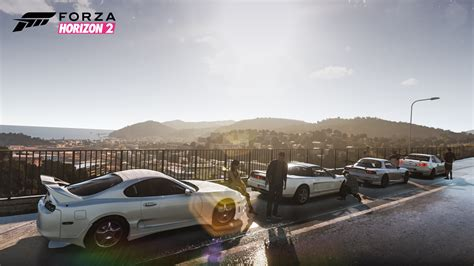
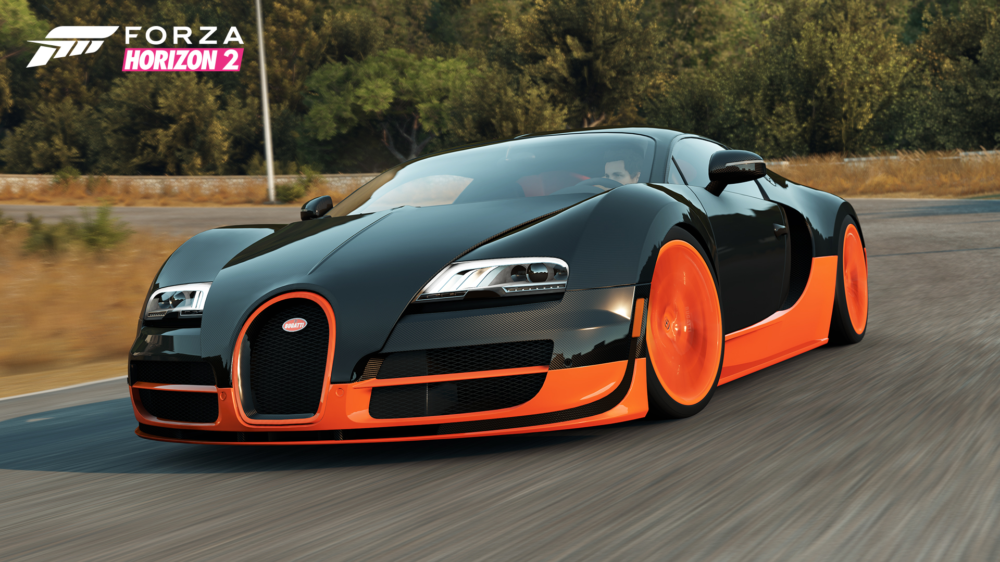
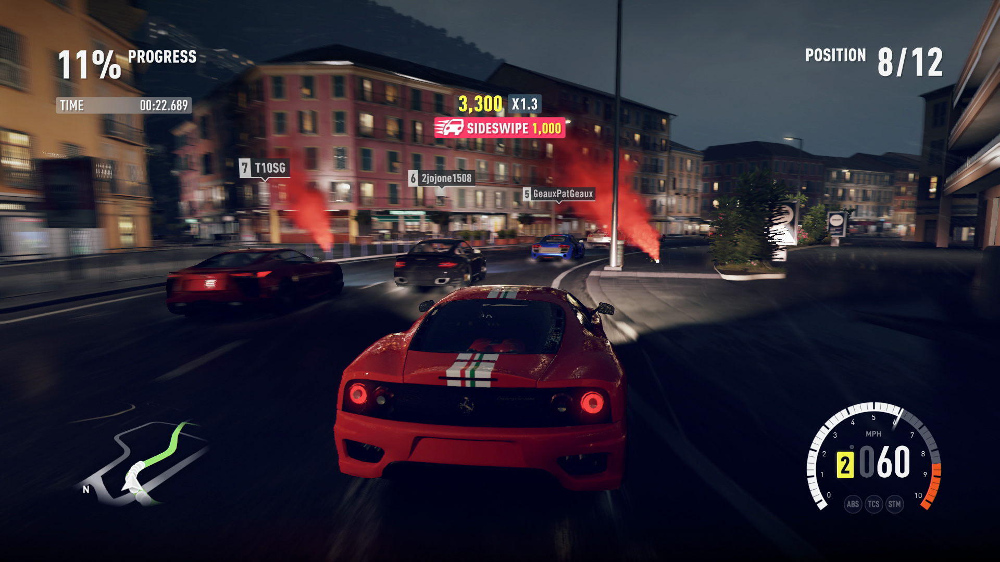
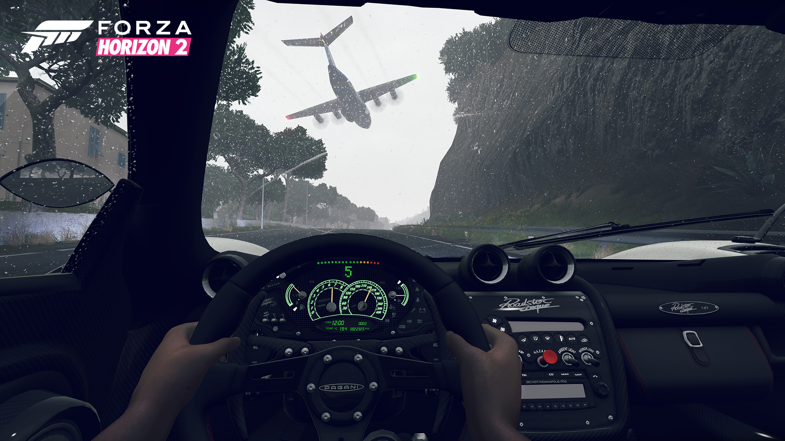
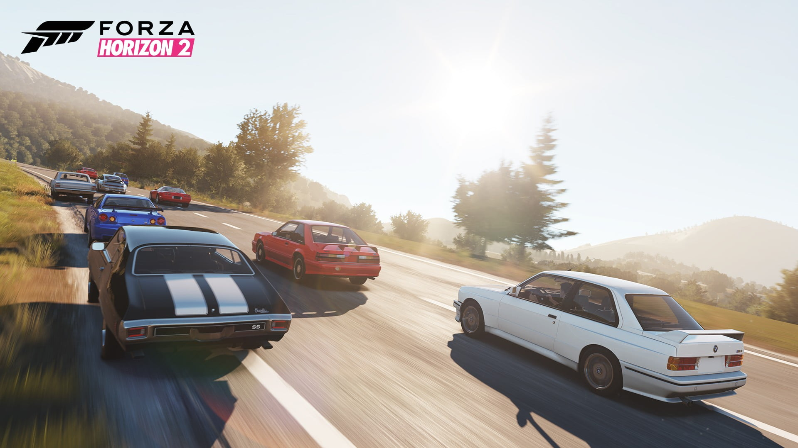

The second game in the series is Forza Horizon 2
Forza Horizon 2 is a 2014 racing video game developed for Microsoft's Xbox One and Xbox 360 consoles. It is the sequel to 2012's Forza Horizon, the seventh instalment in the Forza series, and the series' first multi-console instalment. The Xbox One version of the game was developed by Playground Games, the team behind the original Forza Horizon, while Sumo Digital developed the version for Xbox 360, with Forza series developer Turn 10 Studios supporting both builds. The Xbox 360 version is also the final Forza game released for the platform.
Gameplay
Forza Horizon 2 is a racing video game, featuring an open world environment. The player participates in the Horizon Festival, a fictional racing competition set within Southern France and Northern Italy. The game has approximately three times more drivable area than that of its predecessor Forza Horizon, with events set in Provence, Liguria and Côte d'Azur (Nice) along with scaled down towns of Sisteron and Saint-Martin-du-Var.
There is a small part of the map that includes parts of the Amalfi Coast and a fictional town called Castelletto which consists of features from the town of Amalfi. There is also some small features in the map like the golf course, the docks (which are only accessible in the Xbox One version of the game) and aerodrome. Players can explore the expansive map, taking part in races and special events in order to advance through the game. Events can take place at day or night, and a dynamic weather system was added for the first time in a Forza-series game.
Development
Forza Horizon 2 is the second game in the series to be developed principally by a studio other than Forza Motorsport developer Turn 10 Studios. Playground Games, the lead developer for Forza Horizon, focused on the Xbox One version, using the graphics engine from Forza Motorsport 5 as their starting point. While the engine is capable of displaying content 1080p and 60 frames-per-second, the game was locked at 1080p and 30 frames-per-second, which was deemed necessary because of the game's open-world nature. According to creative director Ralph Fulton, "one of the big technical challenges that we had to face was making sure that we could stream in a world that is next-gen beautiful, but fast enough to keep up with the fastest car."
Expansions
On 16 December 2014, Microsoft launched Storm Island, an expansion pack for the Xbox One edition of the game. Storm Island adds, along with the new setting and associated tracks, five new event types, an expansion of the game engine's weather system, five new vehicles and an additional barn-find car. On 25 February 2015, Microsoft announced Forza Horizon 2 Presents Fast & Furious, a standalone expansion to promote the release of Firous 7. It was released on 27 March 2015 for free until 10 April 2015. The expansion added music from Furious 7, composed by Brian Tyler, exclusively for the Showcase events. Actor Christopher "Ludacris" Bridges who played Tej in the Fast & Furious series was also featured in the game with his voiceover.
In June 2015, Microsoft announced a new Porsche expansion pack for the game that was released on 9 June 2015. The expansion, which was authorized by Electronic Arts, the then-license-holder for Porsche vehicles in video games, adds ten vehicles, such as the 944, 911 GT3 RS, the Macan Turbo and the Cayman GTS. The expansion also adds new Bucket List items, new Rivals events and 15 new achievements based around the Porsche models. All the DLCs contents are only exclusive to the Xbox One edition of the game.